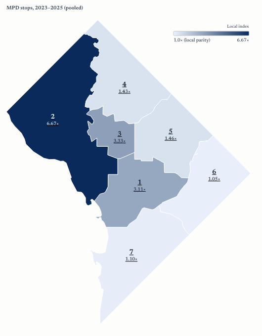
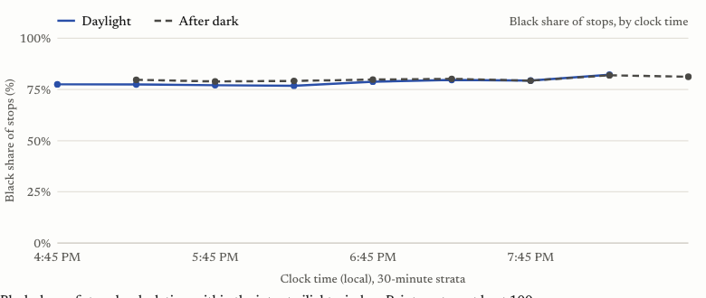

A live publication that measures DC policing against MPD's own records. Nine analyses, two baselines, results published whichever way they point.
To understand how policing in DC lands across race. MPD publishes the records, but nobody was measuring them against baselines, continuously and in public. I hadn't seen anything like it.
| Source | Records | Window |
|---|---|---|
| MPD stops of persons | 509,000+ | July 2019 to 2025 |
| MPD adult arrests | 320,000+ | 2013 to 2025 |
| Reported incidents | 588,000+ | 2008 to present, daily |
| Moving violations | 7.9M | 2023 to 2025, 98.6% camera |
| Population by tract | ACS | 2019 to 2023 |
DC Open Data and the Census API. Counts as of the July 2026 releases.
Two baselines: who lives in each police district, and the crime its residents report. Nine analyses:
If searches of Black and non-Black people find contraband at the same rate, the extra searches of one group are not finding more. Direction is claimed only when a two-proportion z-test is significant at 5%.
If officers see race before stopping someone, daylight stops should skew Blacker than after-dark stops at the same clock time. Stops in the 4:45 to 9:09 PM twilight window, lit by NOAA sunset times, pooled with a Mantel-Haenszel odds ratio across 30-minute strata.
Equal hit rates can hide searches made on thinner suspicion. A Bayesian model infers the evidence bar itself for 14 cells (7 districts by race), fitted with emcee MCMC.

In the 2nd District, 8% of residents are Black but 53% of people stopped were. Citywide: 1.82x, and above parity in all 7 districts.
Black stopped people were pat-down searched at up to 4.5x the rate of everyone else. Hit rates were the same: 13.9% vs 12.5%.
The inferred bar for searching Black people is lower than for everyone else. Searches proceed on thinner suspicion.
No daylight effect. The disparities are not explained by officers reacting to what they can see. This one favors MPD.
Results that favor MPD are published at the same prominence as those that do not.

Between July and September 2026 I retired the Ask AI chat, the map's natural-language query and the paid AI reports. They gave verdicts the data could not support. Trust and accuracy mattered more.
Stop rates are compared to residents, not to who is on the street. Downtown's daytime population is not its residents.
The non-Black hit rate rests on 1,081 searches. More years of data would tighten the intervals.